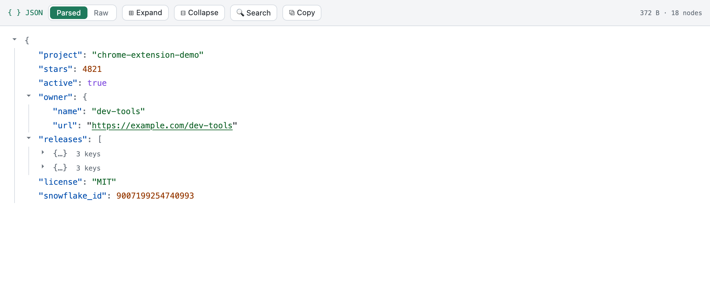
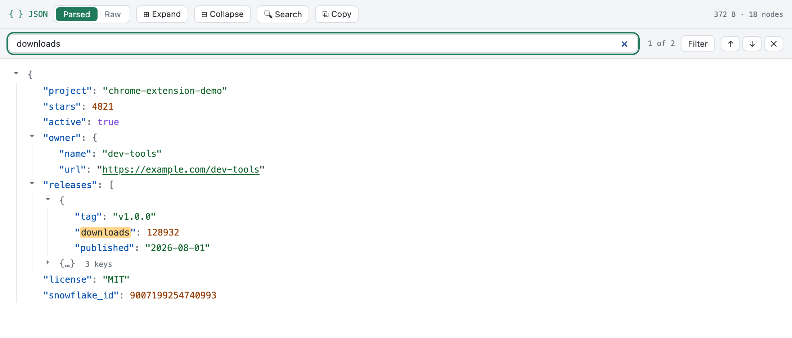
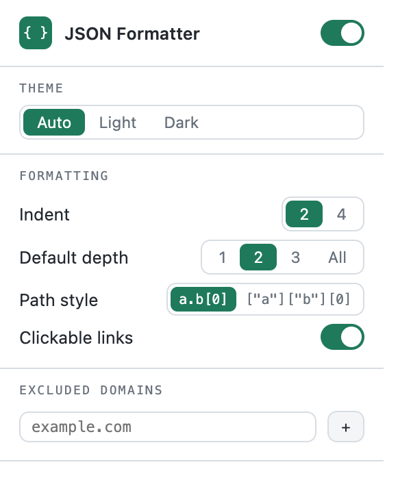

From now on, any raw JSON you open — an API response, a
.json file — turns into a collapsible, searchable tree.
Automatically. Nothing to click, nothing to configure.
Open any JSON page and you get syntax highlighting, collapsing, indent
guides and item counters. Numbers, key order and every literal are shown
byte-for-byte from the source — big 64-bit IDs like
9007199254740993 are never rounded. Hit Raw
in the toolbar any time to see the untouched original.

Press Ctrl+Shift+F (⌘⇧F on Mac)
to search keys and values — matches are highlighted and the path to each one
unfolds automatically; Filter hides everything else. Hover
any row to copy its value (a valid JSON fragment) or
copy its path (releases[0].downloads). The
Copy button in the toolbar copies the whole document, formatted or minified.

Click the extension icon in the Chrome toolbar to open settings: light / dark / auto theme, indent width, default expand depth, path notation, clickable links — and domains where you’d rather keep formatting off. Changes apply to open tabs instantly.
Want it on local files too? Enable
“Allow access to file URLs” for JSON Formatter on
chrome://extensions — the popup reminds you if it’s off.

No ads, no tracking, no analytics — ever. The extension makes zero network
requests: your JSON is processed locally in the tab and never leaves it. The
only permission it uses is storage, to remember your settings.